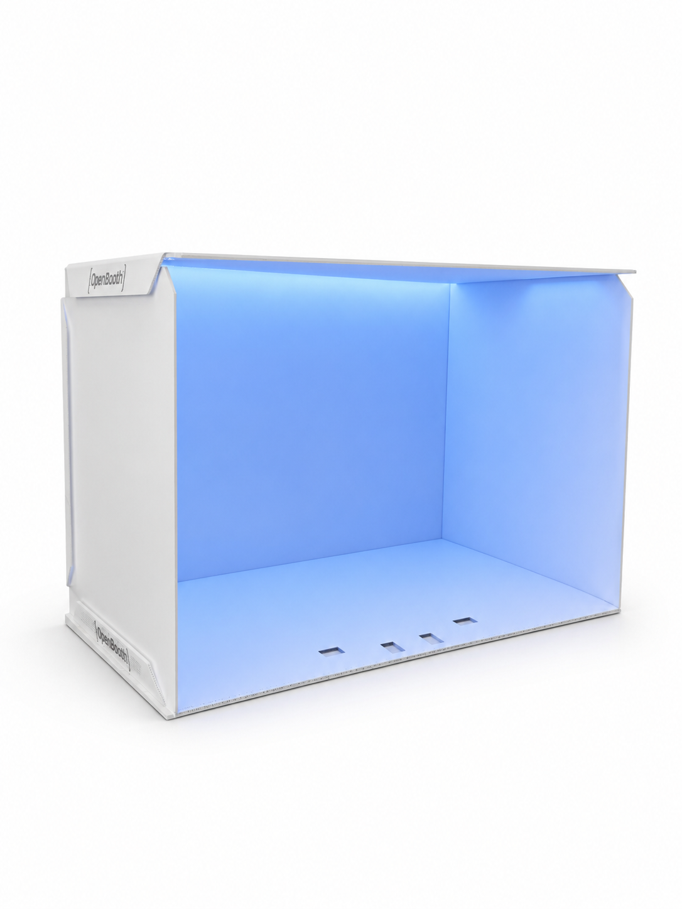

[ SEARCHABLE SKILLS ]
OpenBooth public skills.
Loading skills...
No skills match the current search and filter.
OpenBooth already has public robot skills your SO101 can learn from. Browse the recordings now, then put your own robot inside the booth to train the next task without starting from zero.
OpenBooth gives your SO101 a consistent stage for repeatable tasks. Start from public winning-demo data, adapt the behavior, then record only what your next task needs.
Show a complete task loop and teach the next variation from the same booth setup.
Use paired SO101 arms for coordinated demos that benefit from shared OpenBooth skills.
Bootstrap from public recordings instead of collecting every episode from scratch.

Put your SO101, or bimanual SO101, inside the same controlled booth used for these public recordings. Your robot can use existing OpenBooth data as a starting point, then train the next task instead of gathering everything from scratch.